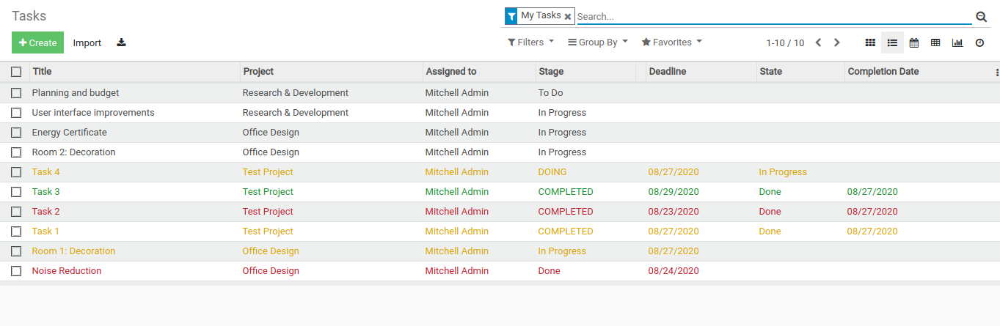

Screenshots
1. Task tree view.

2. Task kanban view.

By default, all the task in tree view and kanban view shows red deadline status if current date exceeds deadline date. This module adds feature to show task status according to it's completion date and state.
To install this module another external module project_stage_state is required. Download and install project_stage_state module from here.
Then install the module named project_task_status and use the additional features of it.
1. Task tree view.
2. Task kanban view.